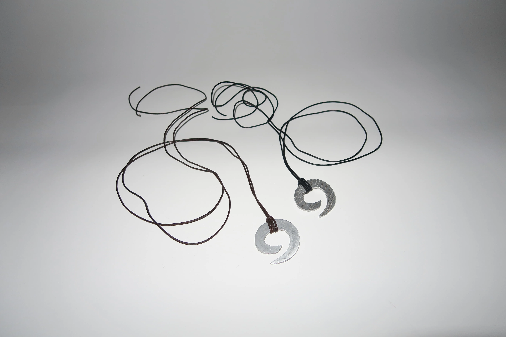
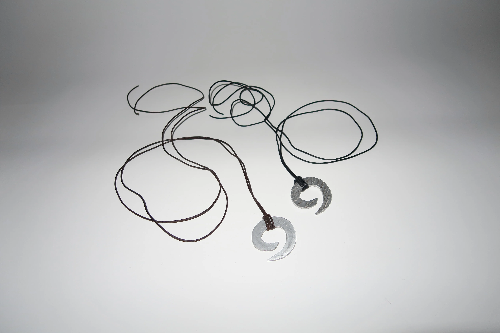

Jeg hedder Ida Stamhus og er 23 år gammel. Til daglig studerer jeg multimediedesigner-uddannelsen på Københavns Erhvervsakademi på Nørrebro. I denne portfolio kan du se de forskellige temaer og projekter vi har arbejdet med i første semester.
Inden studiestart havde jeg begrænset erfaring indenfor faget, men har gennem det seneste semester opnået en bred faglig indsigt gennem både kodning af digitalt indhold samt design. Der har løbende været udfordringer, som kun har bidraget til at udvikle mine kompetencer og styrker for webdesign. Hvert projekt har fokus på læring og refleksion og har på forskellig vis udvidet min faglige viden og forståelse.
Jeg har altid haft stor interesse for at udfolde mig kreativt. Jeg er vokset op med tre ældre søskende, som alle havde en kreativ interesse, hvilket i høj grad har påvirket og inspireret mig. Gennem årene har jeg arbejdet med forskellige kreative projekter.
Efter tre fantastiske år på gymnasiet i Aalborg valgte jeg at tage på Vallekilde Højskole i mit første sabbatår i håbet om at få mere erfaring inden for den kreative verden. Her startede jeg på hovedfagslinjen Design og Maker, hvor jeg fik erfaring med en bred vifte af kompetencer, herunder grafisk design i Adobe-programmer, serigrafi, smykkedesign, linoleumstryk og meget mere.
 
